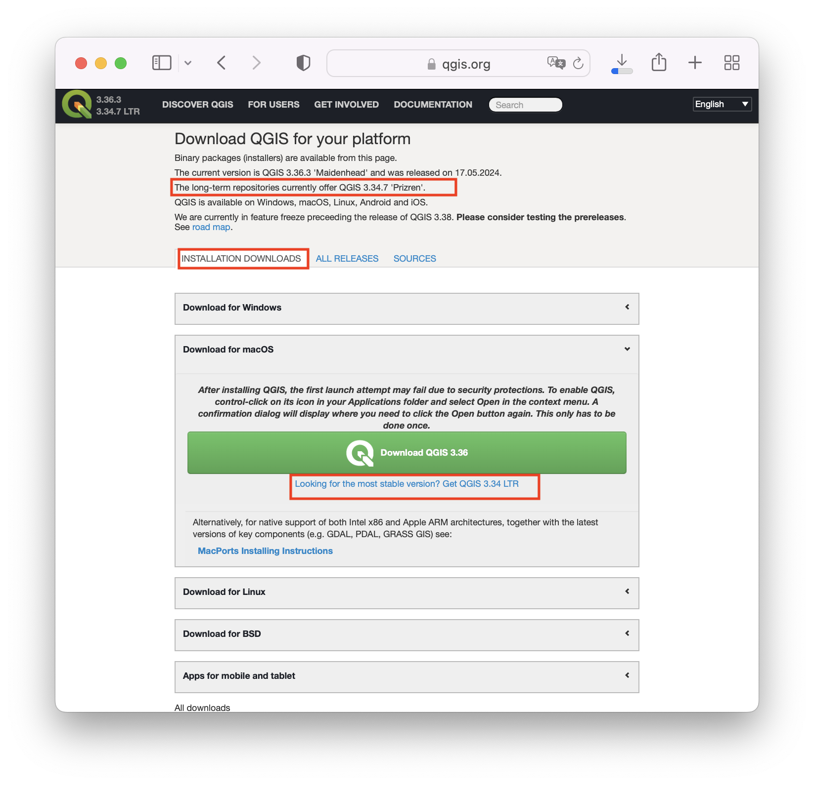
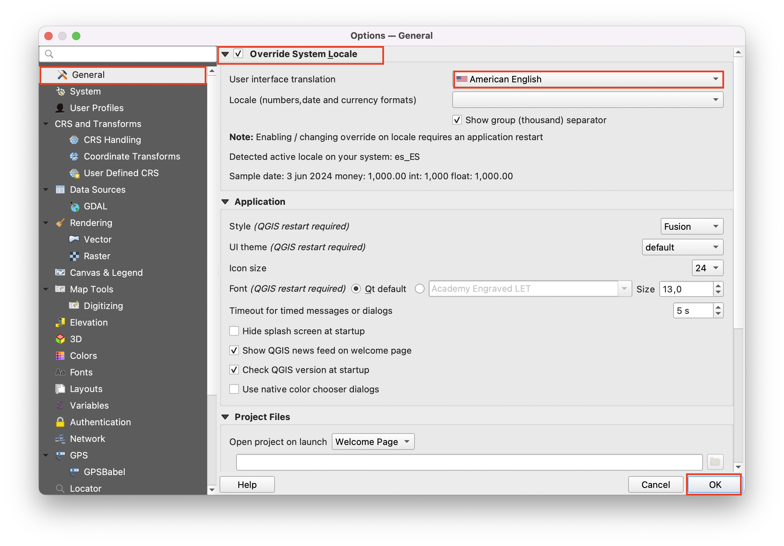
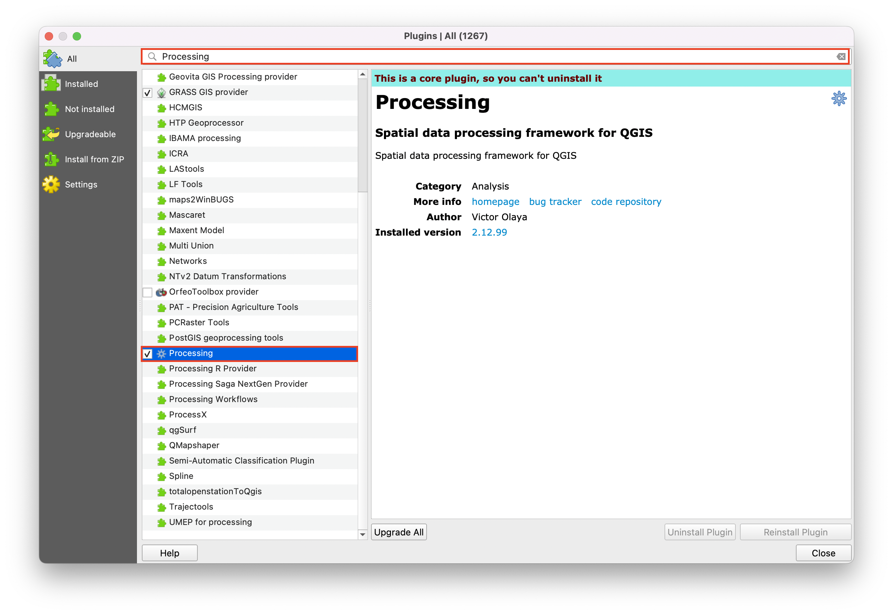
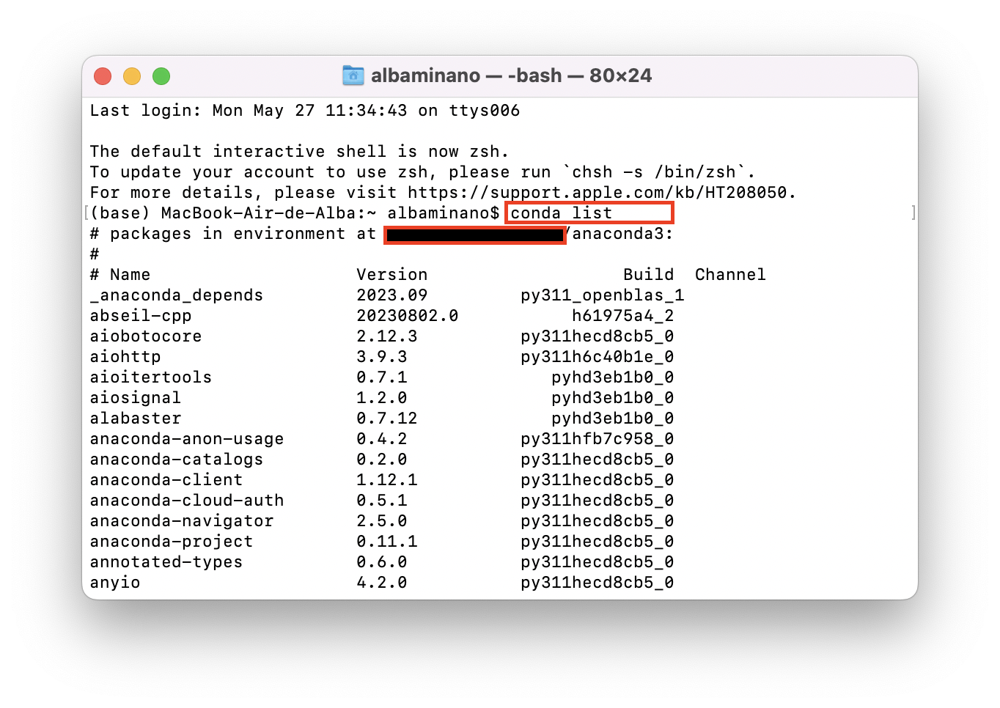
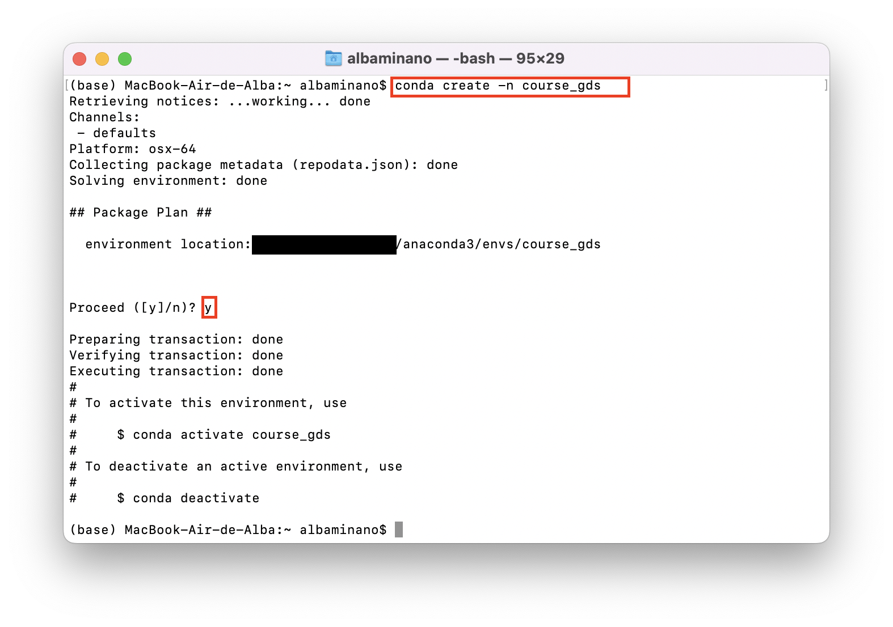

Installation guidelines
This course makes use of two types of open-source Geographic Information Systems (GIS). As a desktop program, we will use QGIS (Quantum Geographic Information Systems), and for a coding-based approach, we will use the Python environment. QGIS is an excellent starting point for getting accustomed to manipulating geographic data. However, there comes a point where more advanced tasks typically require a shift to coding-based approaches. An example of such situations is when users want to go beyond visualization and are also interested in extracting statistically based conclusions – i.e., most of the research scenarios– from their geographic data. Doing this in a coding-based environment as Python is straightforward, as there is no requirement for the intermediate step of transferring the QGIS output data to other statistical packages. Nonetheless, the justification for including sections with both approaches is that working complementarily with both programs is more productive than focusing on just one.
Installing QGIS
QGIS is an open-source, cross-platform, and free geographic information system. For this course, we will use the latest stable version (the long-term release, LTR), QGIS 3.34 Prizren, released in November 2023. QGIS always offers two main versions: the most recent release version and the stable version. On the one hand, the most recent release version has more features and has been tested by developers, but it is still undergoing community testing, implying it may have unresolved bugs. On the other hand, the LTR version has already undergone the community testing process, so it contains fewer bugs, but it also has fewer features.
Bear in mind that if a new LTR version of QGIS is available while you are using this course, you can download and use it instead of sticking to QGIS 3.34 Prizren. However, be aware that some functionalities and the execution of certain algorithms may differ from what is presented in this course. In such cases, you are encouraged to use the course notes to consider how these changes might affect your workflow.
To install QGIS, visit the official download webpage.
Select your operating system and the long-term release. In case the active LTR is different from QGIS 3.34 Prizren, and you wish to stick to that installation, you will have to find it by clicking in the All releases tab.

Follow the on-screen instructions of the installer to complete de installation.
Verify the installation by opening QGIS and setting the language to English. To do this and many other customizations (e.g., background color, etc.), you can access the options by clicking on the
 icon in the Settings tab. This way, you will overwrite your user profile preferences for QGIS, so that every time you open a project with that profile, those preferences will be applied by default.
icon in the Settings tab. This way, you will overwrite your user profile preferences for QGIS, so that every time you open a project with that profile, those preferences will be applied by default.To change the language, click ‘Override System Locale’ and change the language in ‘User Interface Translation’ and accept. When you reopen QGIS, the language will have changed.

Following along will be easier if you leverage the processing toolbox. You can activate on the ‘Processing’ tab.
If you are unable to install it, you will have to first install the plugin. To do so, access the tab Plugins → Manage and Install Plugins. Look for Processing on the search tab and install the plugin. After, you should be able to activate the toolbox.

Installing a Python environment for Geographic Data Science.
Although desktop GIS software is useful for getting started and learning basic concepts, programming languages give us much more flexibility to continue advancing and making the most of the data.
For this course, we will focus on Python for the following reasons:
- Python is widely used, which increases the availability of resources that end users can leverage.
- Python is free and open-source.
- Python is connected to many software programs, including QGIS and ArcGIS. This type of connection with other software allows you to extend the functionalities of software packages and customize solutions for your specific data analysis needs.
However, setting up a Python environment that allows us to work with geographic data is not straightforward. We need an environment with all the packages/libraries that enable us to work with geographic data (e.g., geopandas). Also, we need to have them installed in a way such that they are compatible with each other. Achieving this is not always easy:

To be able to have mirror environments, I propose doing the following:
- Install Python via Anaconda downloads. Find the corresponding installer for your operating system. Once the installation is complete, the Anaconda navigator should open automatically in your web browse
Just with a native Python installation (either via Anaconda or via the Python official website), we would be equipped to write and run code directly from our terminal. However, this approach is rather unintuitive, especially for beginners who are just getting started with programming. That’s where text editors come into play. Text editors provide a more user-friendly interface for writing and organizing code, offering features like syntax highlighting, auto-completion, and project management tools, making the coding process more intuitive and efficient for programmers of any level.
Install the reference editor (aka Integrated Development Environment) for the course VSCode.
VSCode is a very popular editor because it supports almost any language and, by downloading the right extensions, we can adapt the coding to all levels of programming.
In this course, I will use all the Python extensions and the Jupyter Notebook ones (python, pylance, jupyter, jupyter cell tags, jupyter keymap, jupyter notebook renderers, jupyter slide show, python indent, python debugger, Python extended)
With the native Python installation, we get a subset of basic packages, but in this environment, we need to include the packages/libraries that we need for our particular tasks.
Packages are extensions to the basic Python environment developed by the community. In simple words, we could say they are a collection of scripts that define a new set of functions, data types, and methods that allow further manipulation of our data. Because the architecture of all of these packages is highly interlinked, it is easy to run into incompatibilities when installing our packages.
That’s why Python distributors like Anaconda become useful, particularly because it allows us to install conda, which is a very powerful package and environment manager.
In particular, when we use conda to install a package it downloads a version of the package that has already been compiled for our specific operating system and architecture. Furthermore, conda resolves package dependencies automatically, avoiding conflicts and installation failures. It also enables users to create isolated environments for projects, ensuring clean and reproducible development environments.
Open the Anaconda Prompt (Windows) or directly the terminal in Mac and Linux. To verify the installation type
conda listto see the list of installed packages and their versions.
To avoid conflicts during the installation with other installations you might have, create a new conda environment that we will use for the course.
From the same terminal, type:
conda create -n course_gds. It will indicate the location and ask you to type ‘y’ and click enter to proceed. This has created a new environment, named ‘course_gds’
To install the packages in this environment, we will use the environments maintained by Dani Arribas-Bel, Professor of Geographic Data Science at the University of Liverpool. Depending on your computer, you should download the following linked files:
These files are like configuration files, containing all the dependencies and settings for a
condaenvironment. This file allows users to recreate the exact environment with all necessary dependencies by running a command on the Conda terminal, making it easier to share and reproduce environments across different systems. This means that if we all install the same configuration file, we will be sharing the same computational environment (i.e., same packages, versions, environment name).I recommed that you do not move these files around and leave them on the default Downloads folder.
Activate the environment you created in step 4 by typing
conda activate course_gds. With path_to_txt_file being the location of the file downloaded in step 5, type in the activated environment:conda install --file path_to_txt_fileTo verify the installation, after the installation is complete, type in the same terminal
python.
Also, open VSCode and in case you haven’t installed the extensions of step 2, install them. After, as final verification try opening a new Jupyter Notebook (File → New File → Jupyter Notebook ) and selecting as kernel the new environment: Select kernel → Python environments → the environment you have created (i.e., course_gds). Now, we should be ready to go.